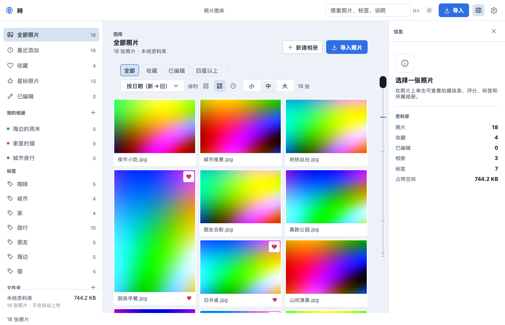
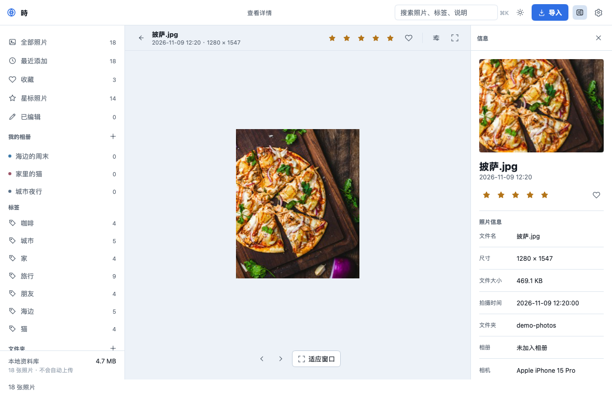
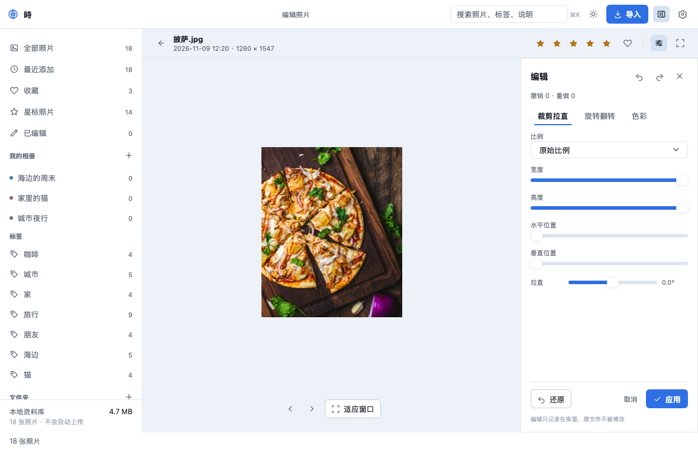
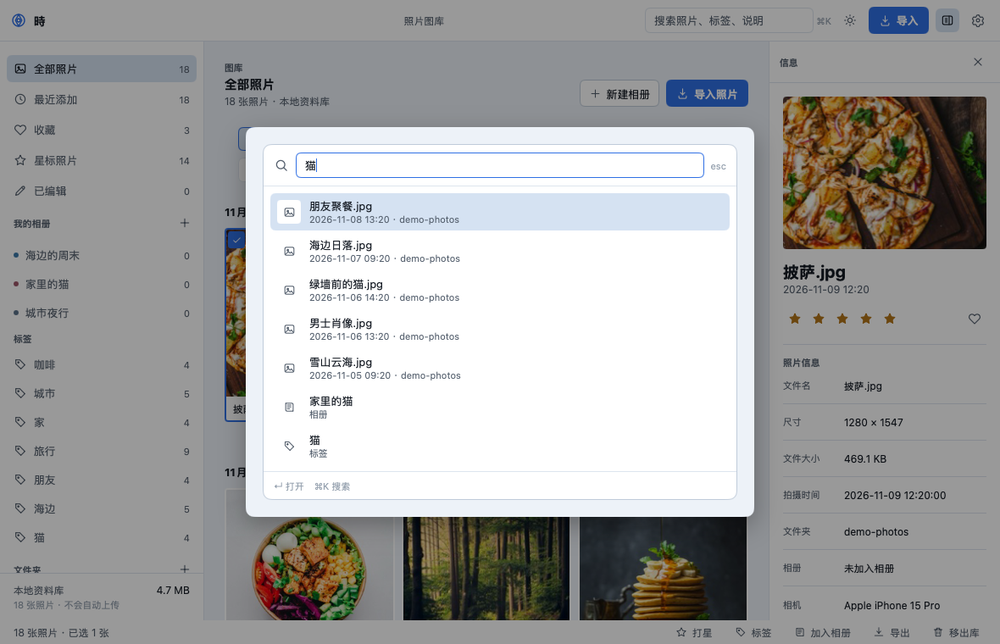
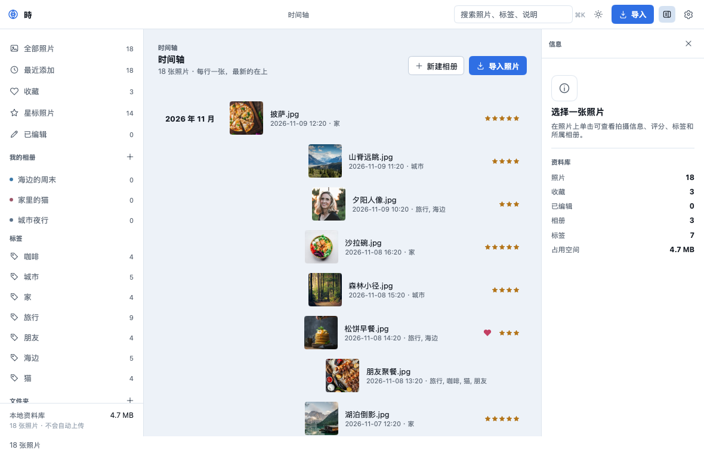
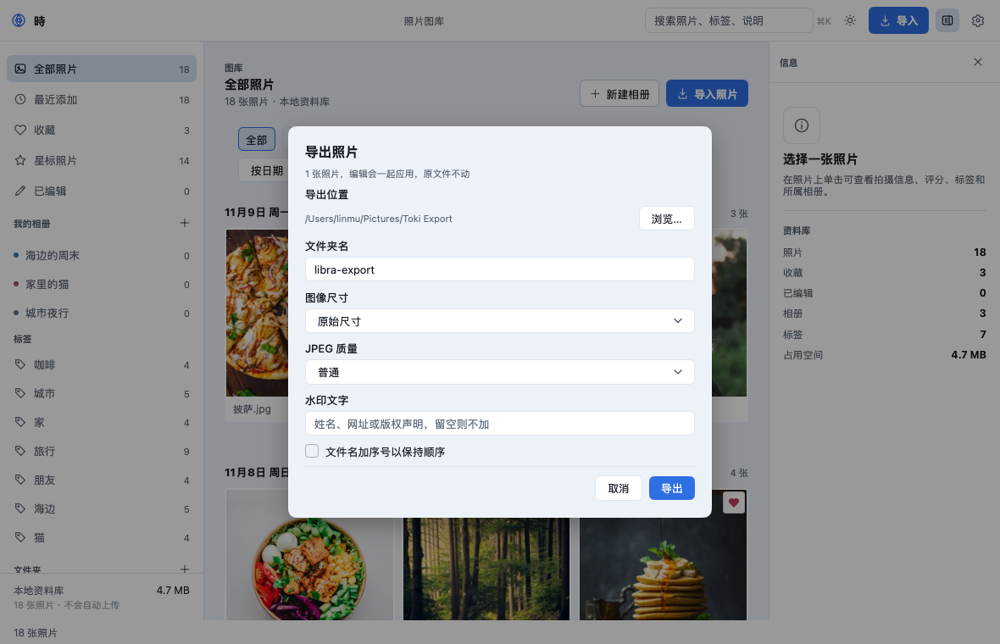
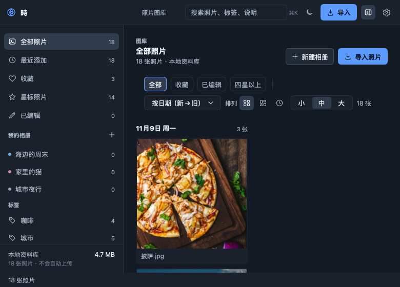
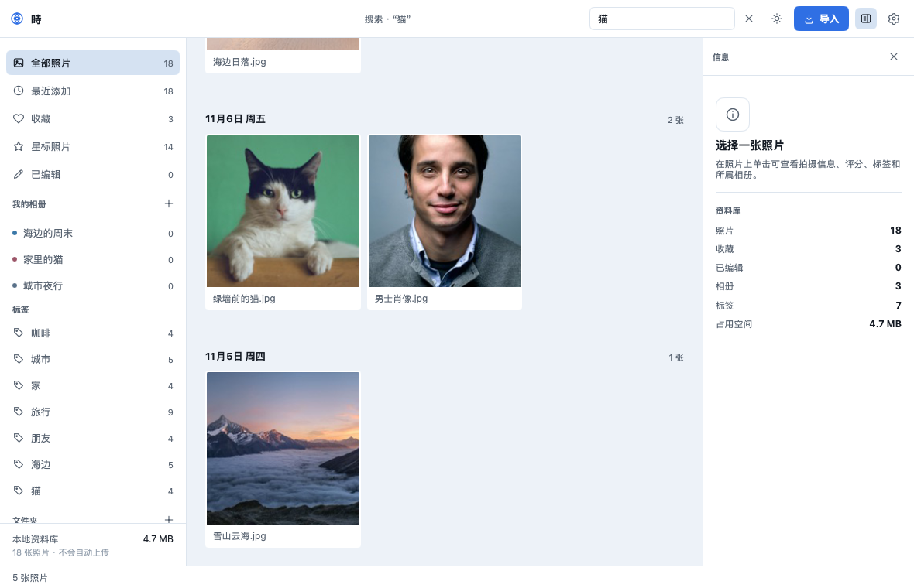

macOS · Linux · Windows
把照片留在自己的电脑里
Toki（時）是一个纯 Go 编写的本地优先照片库，做成原生桌面应用：整理、查看、编辑、导出都在本机完成。
A local-first photo library built as a native desktop app in pure Go — no Electron, no cgo, no accounts, no telemetry.

特性
该有的整理能力都在，界面保持安静。原文件永远只读——编辑只存在库里，导出时才写出一份副本。
三种照片墙
按日期分组的网格、按最矮列排布的瀑布流、每行一张的时间轴。布局与计数按变更缓存，滚动时只构建可见的卡片，万级照片也立刻打开。
查看器
深色舞台与胶片条，滚轮以光标为中心缩放（10%–800%）、拖动平移、幻灯片播放、键盘切换。
整理与搜索
星标、收藏、标签、相册、按文件夹与年份浏览；文本 × 星级 × 来源 × 排序 × 筛选的组合搜索。
非破坏性编辑
裁剪与比例预设、拉直、旋转翻转，以及曝光、对比度、饱和度、色温、暗角；逐张撤销重做，缩略图、预览与导出共用同一份渲染结果。
导出
8 档尺寸、4 档 JPEG 质量、文件名加序号、水印。原图不动，导出的是带编辑的副本。
元数据与格式
读 EXIF（相机、ISO、光圈、曝光、焦距、GPS、拍摄时间），写 XMP（JPEG 内嵌，其它格式写边车）。支持 JPEG、PNG、GIF（含动画）、BMP、WebP、TIFF。
从 Finder 打开
已注册常见图片的扩展名与系统类型。把「打开方式」设为 Toki 后双击即进入查看器；库外的照片按它所在的文件夹临时浏览，不写入图库。
监视文件夹
新照片自动出现，导入后在后台预生成缩略图与小预览。不联网、无账号、无遥测，库就在本机的应用支持目录里。
截图
深色与浅色两套外观，默认跟随系统。查看器的舞台在两套外观下都保持深色，为的是把注意力留给照片。






深色外观
同一套界面，换成暗色 Token




下载
安装包由 GitHub Actions 在每次打标签时自动构建，三平台同一份源码。
macOS 构建为 ad-hoc 签名、未公证，首次打开需要在「系统设置 › 隐私与安全性」里允许。
也可以从源码构建：cd app && go tool mygo build（需要 Go 1.27+）。没有网页版——Toki 是原生桌面应用，不是在浏览器里跑的。
技术栈
一个二进制、一套代码，没有 Electron、Node 或前端构建链。